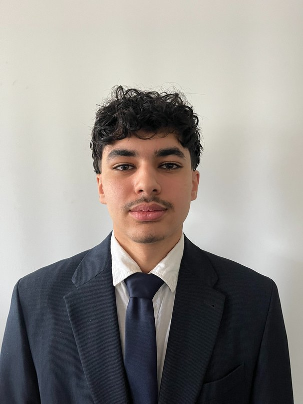

Stage · S4 · 8 semaines
Total Energies Digital Factory
Développeur Python/Flask & Angular
Générateur de données industrielles, puis filtrage, export et import Excel sur une application Angular monitorant 300 sites d'énergies renouvelables.
Développeur en formation, passionné par le développement logiciel et la donnée. Du projet Mnémosyne (suivi des cohortes en Flask) au monitoring de 300 sites d'énergies renouvelables en stage à la TotalEnergies Digital Factory, ce portfolio retrace ma trajectoire et mes compétences.

La logique de mon parcours, mon projet professionnel, mes qualités et ce que cette année de BUT2 m'a apporté.
Je m'appelle Adem Ben Maamar, je suis en 2ᵉ année de BUT Informatique à l'IUT de Villetaneuse (Université Sorbonne Paris Nord), à Montfermeil (93). Avant et pendant mes études, j'ai enchaîné des métiers de terrain exigeants — un an en boulangerie, sept mois comme serveur, deux mois chez BNP Paribas — qui m'ont donné le goût du travail bien fait et du collectif. Si je me suis orienté vers l'informatique, c'est pour une raison simple : transformer une idée en quelque chose qui fonctionne et qui rend service. Mon stage à la TotalEnergies Digital Factory a confirmé cette voie : voir mon code partir en production, dans une équipe internationale, m'a fait passer du statut d'étudiant à celui de développeur — et a précisé mon ambition.
Ce qui me motive, c'est de rendre des données et des outils réellement utiles. Sur Mnémosyne, l'enjeu était de rendre lisible le parcours de cohortes entières grâce à un diagramme clair ; en stage, de fournir aux équipes un générateur de données puis un tableau de bord fiable. Mon domaine de prédilection se dessine donc nettement : le développement d'applications orienté données, là où le code, la base de données et l'interface se rejoignent pour produire de l'information exploitable.
Secteur visé : le développement logiciel en entreprise, avec un attrait fort pour les environnements data et industriels (énergie, monitoring, outils internes) découverts en stage. Technologies de prédilection : Python/Flask pour le traitement et le back-end, JavaScript/Angular pour le front, autour de bases de données SQL. Métier : développeur full-stack ou orienté données, capable d'aller de la modélisation jusqu'à la mise en production.
Je conserve les quatre qualités de mon CV — mais je les illustre désormais par des situations concrètes.
Sur Mnémosyne, j'ai travaillé à cinq (équipe SATURNE 2) : répartition des tâches et gestion du code avec Git. En stage, intégration à une squad multidisciplinaire.
À la TotalEnergies Digital Factory, les réunions quotidiennes se tenaient en anglais avec un partenaire en Inde : il fallait exposer clairement ses avancées et ses blocages.
Pour contribuer au projet GRP, j'ai appris Angular quasiment seul, en quelques jours, et livré mes premières fonctionnalités validées par l'équipe.
Un an en boulangerie, avec des horaires très matinaux : fiabilité et régularité y sont non négociables — des réflexes que je garde dans mon travail.
En BUT1, mes premières SAÉ étaient surtout individuelles et techniques : faire fonctionner un programme, modéliser une base. En BUT2, j'ai changé d'échelle : un projet de groupe long (Mnémosyne, construit en S3 puis repris et amélioré en S4, avec analyse de l'existant et reprise de code), puis une vraie immersion en équipe professionnelle pendant mon stage. Mes acquis pour la suite : l'autonomie d'apprentissage, les bonnes pratiques (Git, revues de code, découpage en tickets) et une vision du cycle de vie complet d'un produit, de la planification au déploiement.
Ce site n'est pas une simple vitrine : c'est un processus continu de réflexion. Chaque projet y est une trace d'apprentissage mise en regard du référentiel de compétences, de mon autoévaluation et d'une analyse réflexive.
Réaliser, Optimiser, Administrer, Gérer les données, Conduire un projet, Collaborer.
Des SAÉ et projets concrets, sélectionnés et commentés comme preuves.
Une mesure honnête de mon degré de maîtrise pour chaque compétence visée.
Ce que chaque expérience m'a appris — et mes pistes de progression.
Du terminal au tableau de bord industriel international.
Développeur Python/Flask & Angular
Générateur de données industrielles, puis filtrage, export et import Excel sur une application Angular monitorant 300 sites d'énergies renouvelables.
Suivi des cohortes — Flask & API ScoDoc
Application web de suivi du devenir des promotions, construite en S3 puis reprise et améliorée en S4 (refonte de la base, Sankey multi-niveaux).
Application terminal complète
POO, héritage, polymorphisme. Logique des déplacements, échec et mat, roque — mon premier grand projet Java.
Catastrophes climatiques
Cycle complet sur un dataset réel : MCD → SQL → Python. Visualisations avec pandas et matplotlib.